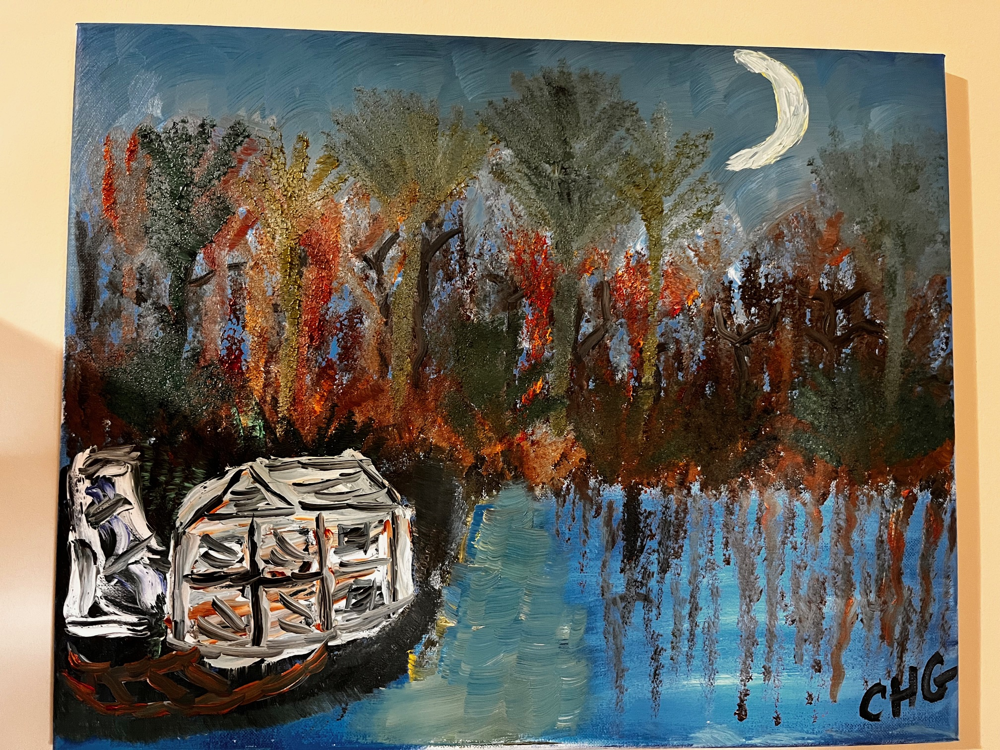
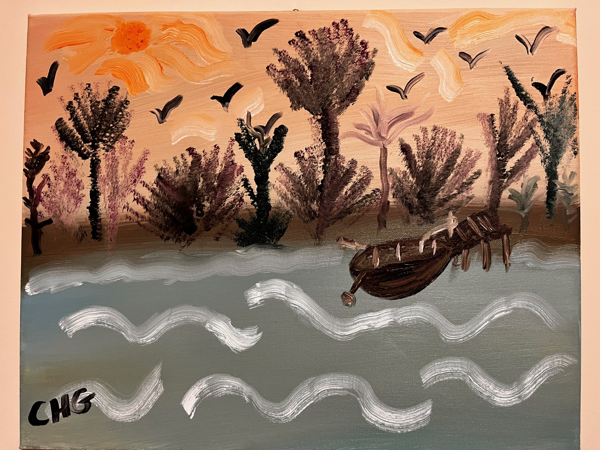
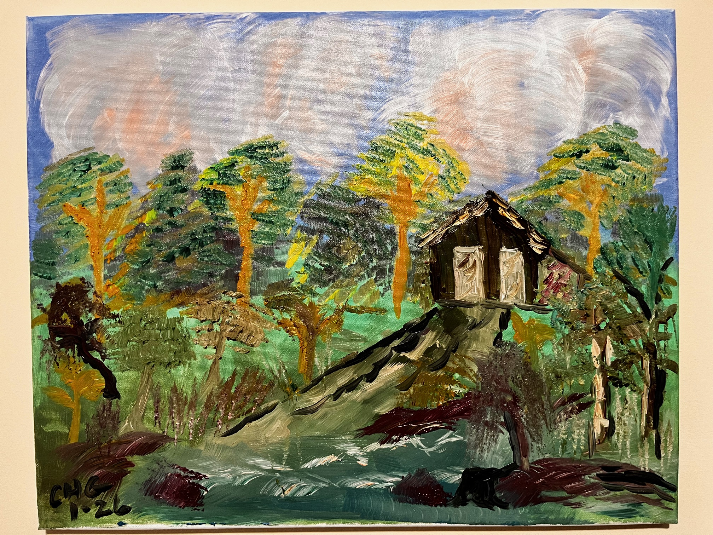
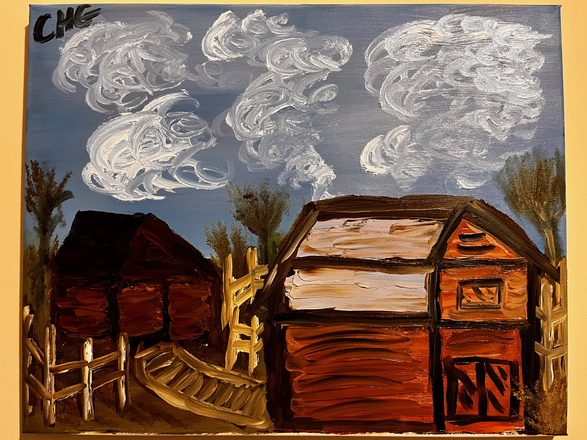
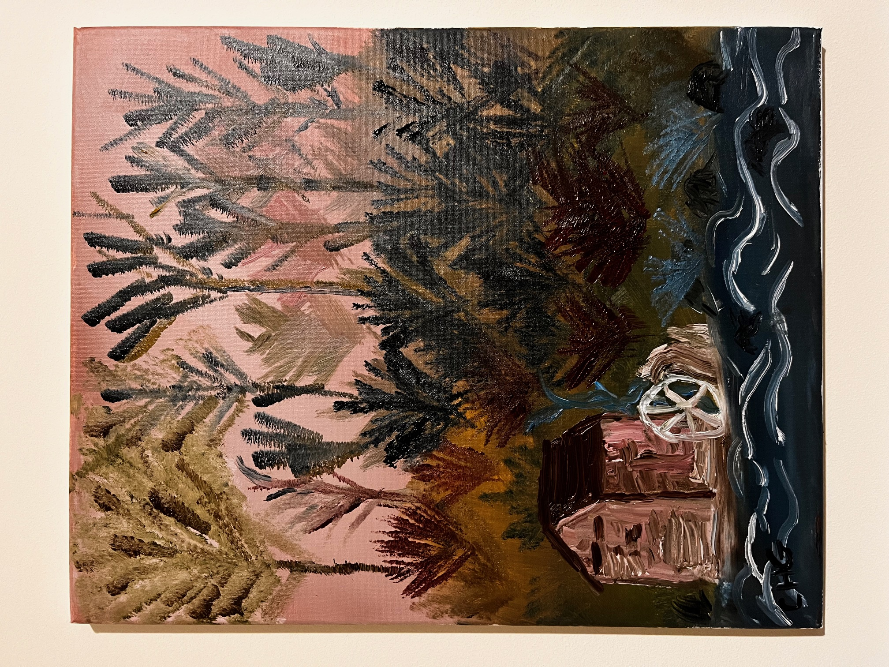
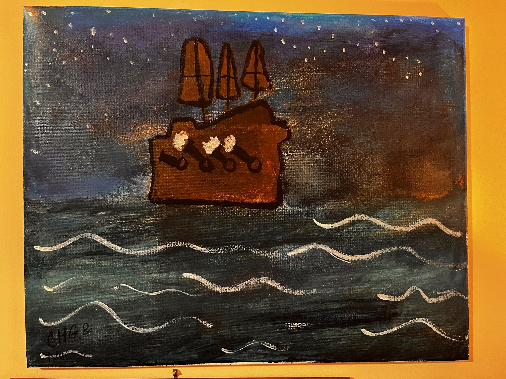

Ten Years Wide
A reflective song about travel, memory, and the long arc of early adult life.
Research • Music • Fragrance • Writing
Welcome to Griffin Archive, a personal hub for my academic work, music projects, and fragrance interests. My professional career has focused on international business, finance, and monetary systems, with research spanning central bank independence, financial crises, global markets, gold, Bitcoin, and digital money.
Outside of academia, I enjoy creative work and collecting fragrance—especially vintage men’s fragrances from the 1970s through the early 2000s. This site brings those worlds together in one place.
This site is intentionally a blend of the professional and the personal: research publications, creative work, and selected interests that reflect the broader arc of a life in teaching, writing, travel, investing, and collecting.
Research centered on central banking, monetary systems, financial crises, investor behavior, global development, and international business.
Original songs created with Suno, often inspired by travel, memory, relationships, and the desire to live more intentionally.
A long-running fascination with fragrance, especially character-driven vintage men’s compositions and distinctive niche work.
Fragrance is one of the most distinctive parts of this archive. Alongside academic work and music, it reflects a long-standing interest in style, memory, history, and aesthetic character.
I have a particular affection for vintage men’s fragrances from the 1970s through the early 2000s, especially the kind that project presence, texture, and a strong point of view.
The collection leans toward bold, character-driven perfumery rather than safe minimalism: fragrances with tobacco, leather, resins, incense, barbershop structure, and a strong sense of era.
My fragrance collection focuses on vintage men's fragrances, with an emphasis on classic compositions from the 1970s through the early 2000s, along with selected modern niche releases.
Here is a full inventory of my fragrance collection.
Download the spreadsheet:
Download Fragrance InventoryOil painting is a recent creative pursuit. Selected works will be added here over time.






In addition to academic research and writing, I have also begun to compose music (using AI tools) inspired by travel, life experiences, and reflections on independence. Many of these songs explore formative periods of life, international travel, personal relationships, and the pursuit of living life on one’s own terms.
A reflective song about travel, memory, and the long arc of early adult life.
A song shaped by longing, nostalgia, and the pull of earlier chapters.
A Portuguese-language track inspired by Brazil, distance, and atmosphere.
A more intimate song centered on closeness, presence, and emotional steadiness.
The original version of a song about autonomy, identity, and self-direction.
A more explicitly autobiographical version of the same idea.
A version shaped around financial independence and living with greater freedom.
The research portfolio below is organized by theme and links directly to uploaded PDF copies of the papers. It reflects a long-running interest in monetary systems, financial crises, market behavior, development, and international business.
Explores how gold and Bitcoin function as reserve assets and how central banks may adapt to a more digital monetary system.
Examines the evolving relationship among gold, Bitcoin, and central banking in the modern monetary era.
Argues for rethinking reserve structures as central banks consider gold, Bitcoin, and state-backed digital currencies.
Evaluates whether central bank independence improved inflation, interest rates, and unemployment over the long run.
Investigates whether central bank autonomy improved inflation and money-supply outcomes in Latin America.
Examines central bank independence through internal institutional characteristics and broader macroeconomic outcomes.
Looks beyond inflation to assess wider macroeconomic effects of central bank independence.
Studies whether pandemic-era government responses measurably affected U.S. stock-market returns.
Considers whether investor optimism, Elon Musk’s influence, and herd behavior help explain Tesla’s valuation.
Compares investor response to stock splits under decimalized versus fractional pricing regimes.
Examines whether lower stock liquidity is associated with higher dividend payments across countries.
Studies how banks contributed to the frequency and severity of currency crises in Latin America.
Examines how currency crises and contagion affect financial markets across countries and regions.
Examines the economic and social effects of large-scale second-hand clothing flows into developing countries.
A teaching case on university governance failure, financial stress, and the loss of accreditation.
Analyzes when host countries benefit from mega-events such as the Olympics and World Cup—and when they do not.
Looks at whether global REIT funds truly deliver diversification benefits for U.S.-based investors.
Explores whether mobile phone penetration is associated with improvements in quality of life across developing countries.
Thanks for visiting. If you’d like to connect, please feel free to reach out by email or explore the Fragrance Professor channel.